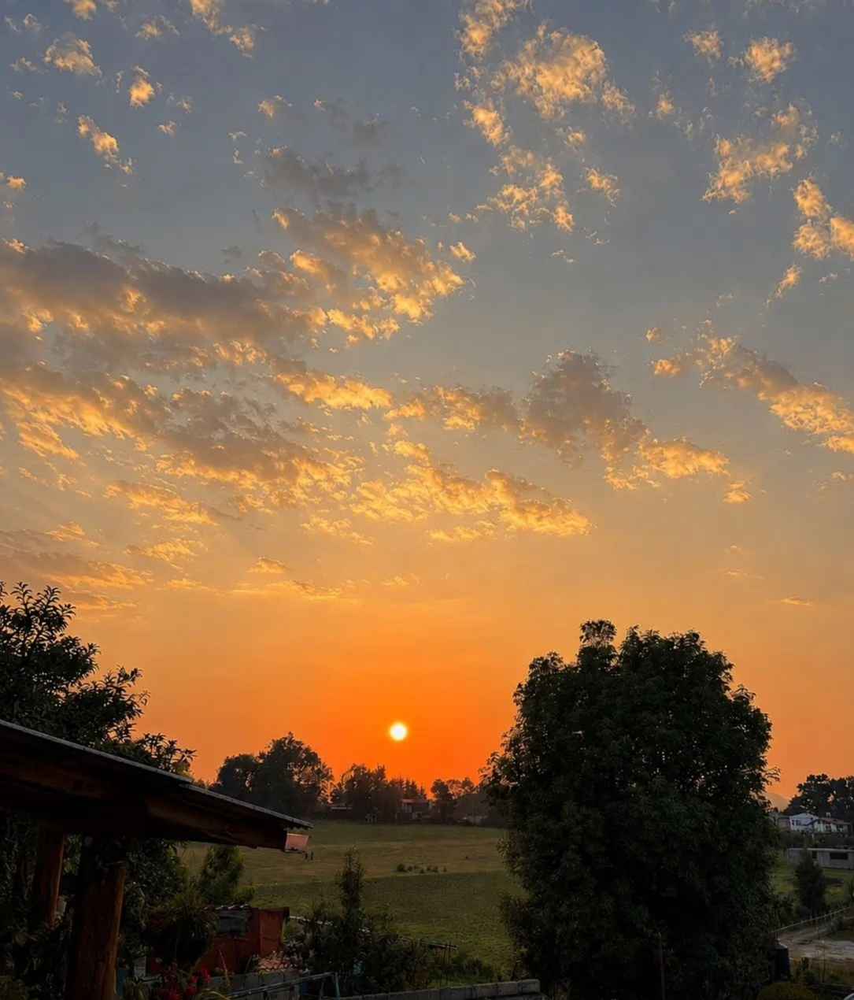
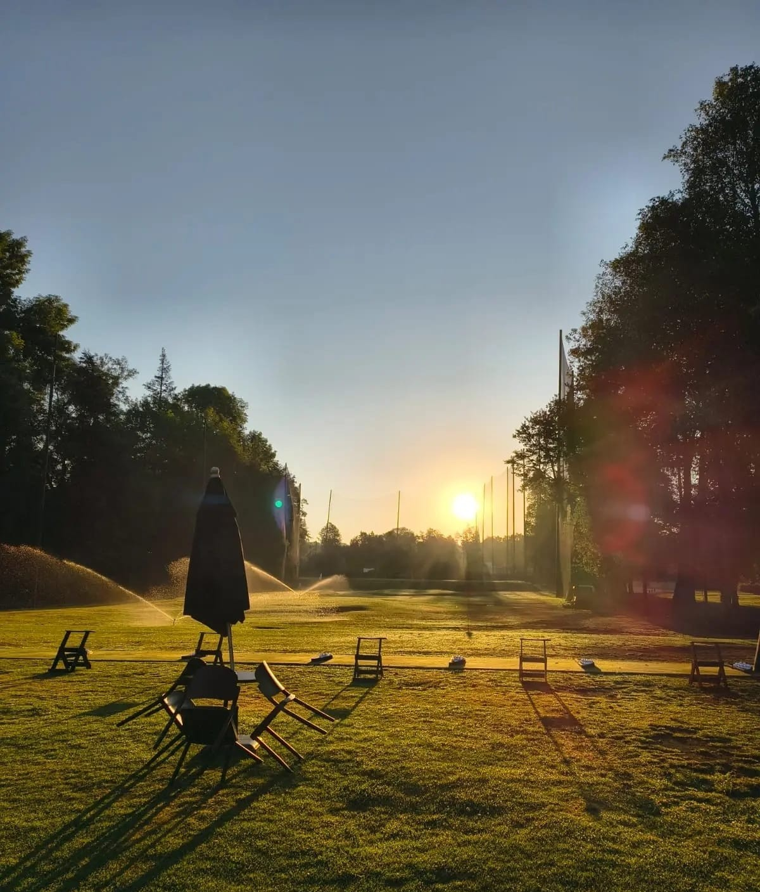
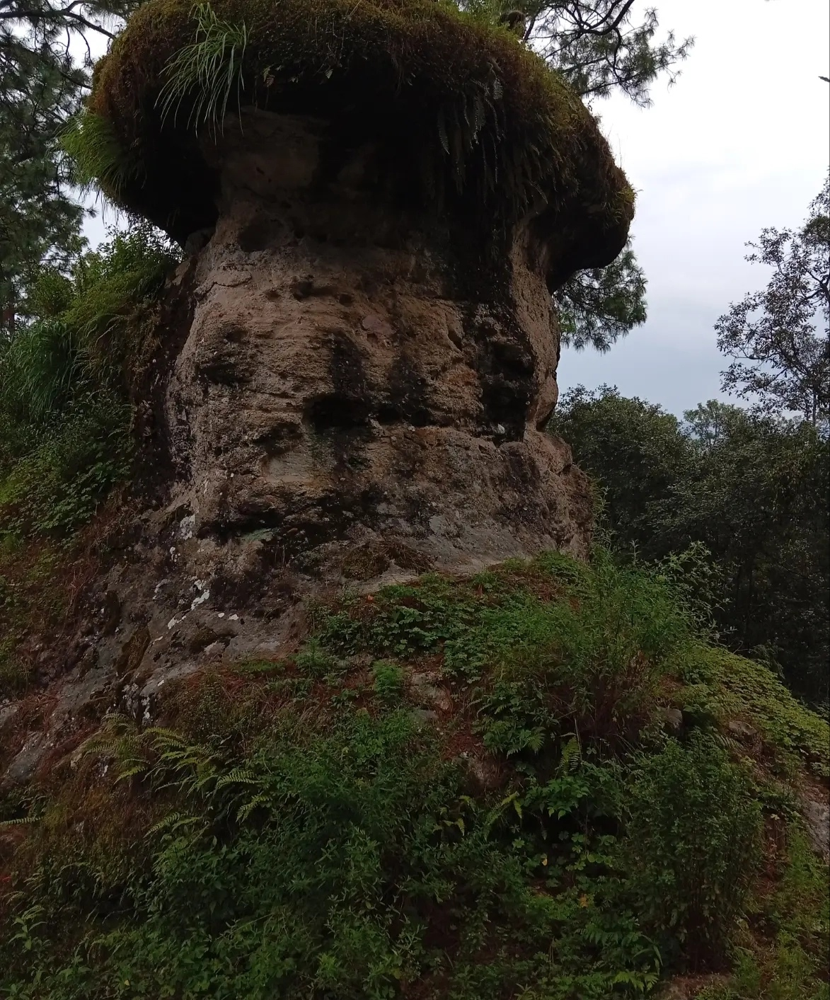
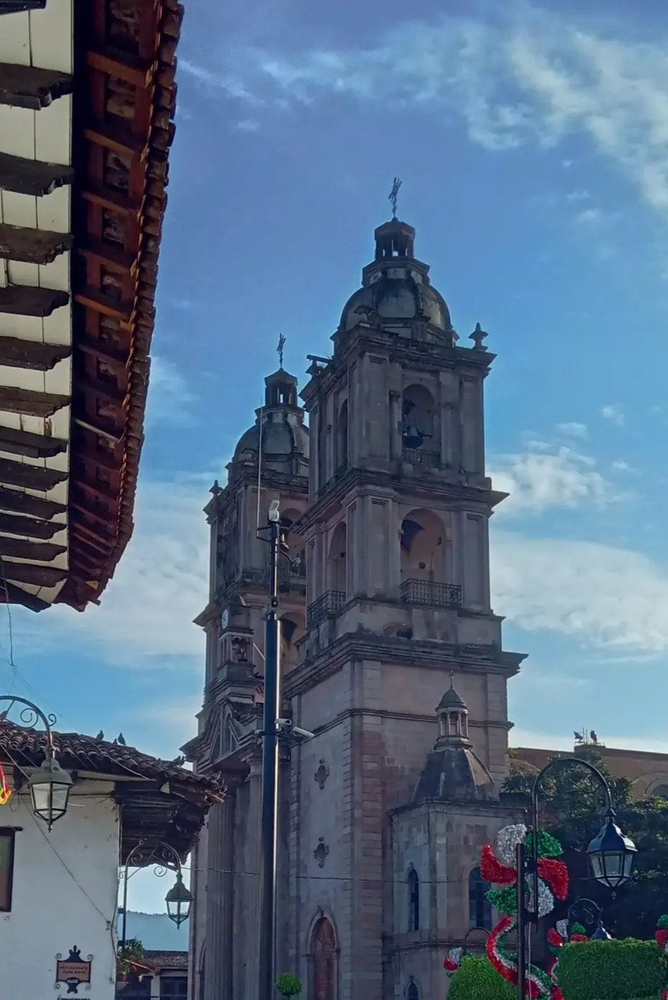
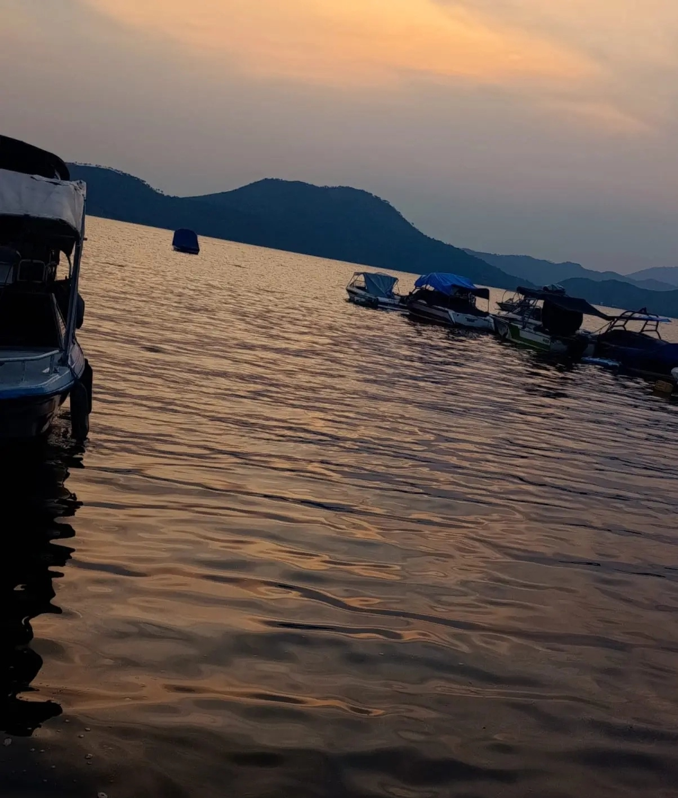
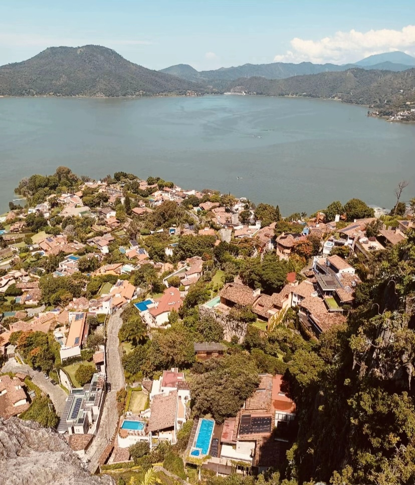

• Ubicación: Se encuentra a poca distancia de la zona de Valle de Bravo (aproximadamente a 15 minutos del centro de Valle de Bravo). • Entorno: Es un área caracterizada por su ambiente tranquilo, rodeada de naturaleza, árboles y vistas hacia el bosque. • Es una zona popular para la venta y renta de terrenos habitacionales, lotes de inversión y casas de descanso. • Muchas propiedades en esta área se manejan bajo régimen ejidal (cesión de derechos ejidales con certificado parcelario). • Servicios: Cuentan con disponibilidad de servicios básicos (agua y luz, en algunos casos con proximidad a las redes de instalación).

El Club de Golf Avándaro se encuentra ubicado en Valle de Bravo, Estado de México. Es un prestigioso complejo deportivo y social rodeado de bosque. Características principales • Campo de golf: Diseñado originalmente por Percy Clifford e inaugurado en 1959, cuenta con 18 hoyos (fue sede olímpica en 1968). • Instalaciones deportivas: Canchas de tenis, pádel, pickleball, alberca semiolímpica y gimnasio. • Bienestar y gastronomía: Cuenta con spa, salón de yoga, el reconocido restaurante Acuarima (junto al hoyo 18) y club de niños. • Membresías: Manejan categorías como Clásica (familiar), Platinum y Juvenil (menores de 33 años).

La ubicación se encuentra en la localidad de La Huerta San Agustín,a 15 minutos del centro de está localidad, para llegar hasta este sitio se toman veredas o caminos cortos

UBICACIÓN: Centro de Valle de Bravo

Es el principal templo católico y un símbolo histórico en el corazón de Valle de Bravo. • Ubicación: Plaza Independencia No. 1, Col. Centro, C.P. 51200, Valle de Bravo, Estado de México (frente al jardín central). • Horarios generales: • Lunes a sábado: 08:00 – 19:00 hrs • Domingo: 08:00 – 20:00 hrs • Horarios de misa (referencia): • Lunes a sábado: 08:00 AM y 07:00 PM • Domingos: 08:00 AM, 09:30 AM, 01:00 PM, 07:30 PM y 08:00 PM

El Mirador La Peña es un imponente monolito de origen volcánico en el Pueblo Mágico de Valle de Bravo, Estado de México. Datos clave de la visita • Vista: Ofrece una panorámica de 360 grados de la Presa Miguel Alemán (el lago), el pueblo y las montañas. • Costo de entrada: Entre $5 y $25 pesos por persona. El estacionamiento cuesta aproximadamente $50 pesos. • Horario: Abierto todos los días (con horarios habituales diurnos, cerca de 9:00 a 17:00). • Ascenso: Toma entre 15 y 30 minutos a pie. El sendero es empinado, con tramos de piedra, raíces y escalones (dificultad moderada a exigente).